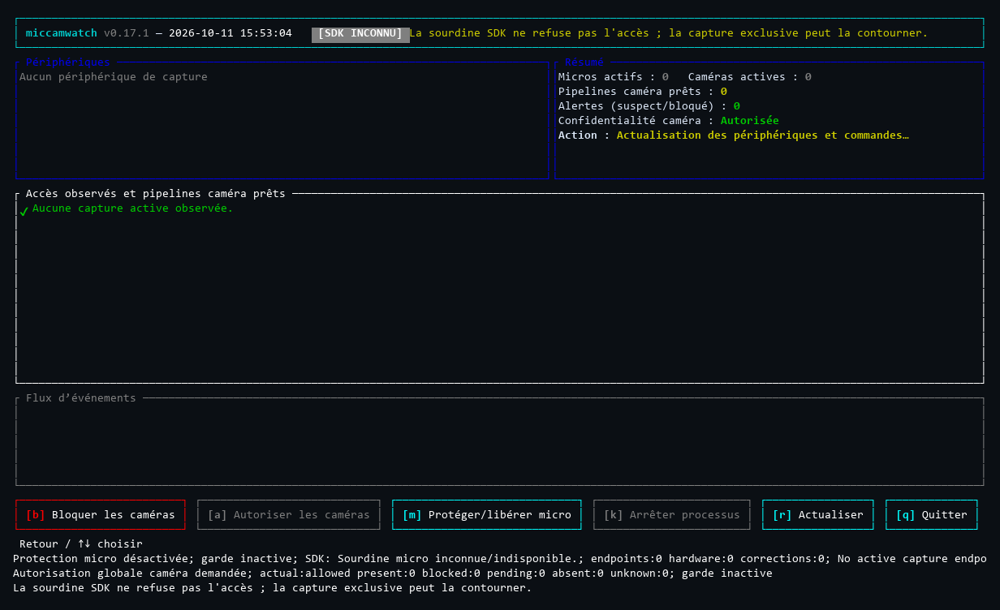

Voyez les accès
État instantané, suivi en direct et tableau de bord terminal. Identité du processus et contexte lorsqu’ils sont accessibles au système.
mcw status --lang frVotre vie privée, plus lisible.
Repérez les accès, comprenez les indices et agissez depuis votre bureau. MicCamWatch observe les métadonnées du système — pas vos conversations, ni vos images.
Windows 10/11 · Linux x64 · macOS 15+
Outil natif · Code ouvert · Sans télémétrie
Observer sans enregistrer
Comprendre avant d’agir
Garder le contrôle local
Moins d’opacité. Plus de contexte.
MCW distingue l’activité observée, le niveau de confiance et le risque. Un indice faible ne devient pas une certitude.
État instantané, suivi en direct et tableau de bord terminal. Identité du processus et contexte lorsqu’ils sont accessibles au système.
mcw status --lang frProcessus, chemin, origine et validation de confiance selon l’OS. Les diagnostics montrent aussi les collecteurs dégradés ou indisponibles.
mcw doctorMute, commandes caméra et démarrage à la connexion : des actions explicites, limitées à ce que la plateforme permet réellement.
mcw tray
mcw top v0.17.1, exécuté en ConPTY Windows de CI (150 colonnes), puis rendue en image. Ce runner ne possède aucun périphérique de capture et l’état du mute SDK y est inconnu : il illustre l’interface, pas une détection ou une preuve de blocage sur matériel physique. Les captures de cette page sont exclusivement Windows.Trois OS, des capacités différentes
La surveillance fonctionne sans droits administrateur. Les actions privilégiées, elles, demandent une autorisation distincte.
| Système | Microphone | Caméra | Contrôles et limites |
|---|---|---|---|
| Windows 10/11 x64 | Sessions WASAPI actives ; processus validé lorsque accessible. | Indices natifs de capture ; attribution au processus lorsqu’elle est disponible. Modules chargés : « ready » seulement. | Mute des endpoints et contrôle des périphériques caméra avec UAC. Protection manuelle détenue en arrière-plan jusqu’à libération explicite ; pas d’isolation électrique, ni de garantie sur les chemins exclusifs/ASIO. |
| Linux x64 · PipeWire | Source et flux en cours avec lien actif ; PID authentifié puis validé dans /proc. | Même exigence de lien actif PipeWire. Un handle V4L2 seul ne prouve pas un flux ; les accès hors PipeWire peuvent échapper à l’observation. | Mute des sources de la session, pas d’interdiction ALSA. Caméras USB uvcvideo prises en charge uniquement via un composant administrateur séparé et revu ; caméras non-USB non prises en charge. |
| macOS 15+ Apple Silicon / Intel | Activité d’entrée CoreAudio ; PID validé si l’identité du processus est lisible. | État d’exécution du périphérique via CoreMediaIO, confiance moyenne. Client et PID inconnus. Ce signal ne prouve pas le flux d’images ; santé caméra « degraded ». | Mute uniquement si la propriété d’entrée est modifiable. Profil caméra détenu par MCW, à approuver manuellement dans Réglages Système ; sa présence ne certifie pas un refus physique. |
Pas de coupe-circuit universel. MCW n’est ni un antivirus, ni une preuve forensique de capture. Un processus protégé, un pilote, un accès direct ou une session inaccessible peuvent limiter les observations et les contrôles. WSL, machines virtuelles et runners sans matériel ne garantissent pas l’accès aux périphériques physiques.
Ressources : objectif 15 Mo non atteint. Les mesures documentées du scénario Windows complet dépassent cet objectif (pic RSS cumulé échantillonné : 56,041 Mo). Ces mesures ont des limites ; aucune garantie de budget mémoire n’est annoncée. Lire les mesures et leur portée ↗
Commencer simplement
Version stable __MCW_VERSION__. Les exécutables restent hébergés sur GitHub Releases, jamais sur un miroir de ce site.
curl --proto '=https' --tlsv1.2 -fsSL https://raw.githubusercontent.com/Roman-Cuisset/miccamwatch/__MCW_SOURCE__/installer/install.sh | shCette commande exécute un script distant. Le télécharger et le lire d’abord est plus sûr. Ce n’est pas une commande PowerShell : sous Windows, choisissez le MSI ou le ZIP ci-dessous.
Sans JavaScript ou en aperçu HTTP, le lien HTTPS pointe vers le script du commit immuable de la version. Sur ce site en HTTPS, la commande est adaptée à son endpoint local install.sh. Les archives et leurs sommes restent téléchargées depuis GitHub.
Les commandes restent sélectionnables sans JavaScript. Le bouton « Copier » apparaît seulement si le navigateur propose son API de presse-papiers sécurisée ; sinon, sélectionnez le texte et utilisez Ctrl+C, Cmd+C ou le menu de sélection.
Le MSI par utilisateur ajoute mcw au PATH et un raccourci au menu Démarrer. Le ZIP portable contient la paire CLI + hôte de tray ; conservez ces deux exécutables ensemble et à la même version.
Rouvrez PowerShell après l’installation. Pour un ZIP non ajouté au PATH, utilisez .\mcw.exe à la place de mcw.
mcw --version
mcw doctor
mcw status --lang fr
mcw topRequiert les bibliothèques PipeWire/SPA, pw-dump et un socket PipeWire accessible dans votre session utilisateur. Le tray nécessite un hôte StatusNotifierItem ; notifications et son nécessitent leurs services de session.
L’installateur gère l’exécutable sous $HOME/.local/bin par défaut et vérifie l’entrée exacte de l’archive dans SHA256SUMS. Les architectures non prises en charge sont refusées, pas remplacées.
L’installateur sélectionne votre architecture native. La barre de menus requiert une session Aqua. Le helper natif est embarqué ; aucun environnement de développement n’est requis pour ces archives.
L’alternative recommandée
Linux et macOS · Ce script est épinglé au commit de la version. Téléchargez-le et lisez-le d’abord ; vérifiez sa somme avant de lancer la commande d’installation séparée plus bas.
curl --proto '=https' --tlsv1.2 -fsSL \
https://raw.githubusercontent.com/Roman-Cuisset/miccamwatch/__MCW_SOURCE__/installer/install.sh \
-o mcw-install.sh
less mcw-install.shAvant exécution, comparez la somme du fichier : sha256sum mcw-install.sh sur Linux, ou shasum -a 256 mcw-install.sh sur macOS. La valeur attendue pour le script installateur (pas les archives) est :
__MCW_INSTALLER_SHA256__Une somme affichée sur le même canal vérifie la cohérence des octets, pas une authenticité indépendante. Consultez également le script à sa source immuable.
Après lecture et vérification, installez la version __MCW_VERSION__ en demandant explicitement l’ajout au PATH :
sh mcw-install.sh --version v__MCW_VERSION__ --add-pathRemplacez --add-path par --no-modify-path pour ne pas modifier la configuration du shell. Sans choix, l’installateur propose un consentement dans un terminal ; il ne modifie pas silencieusement le PATH en non-interactif. Ouvrez ensuite un nouveau terminal. Aucun démarrage automatique ni contrôle de périphérique n’est activé.
Résultat attendu sous Unix : le script affiche les étapes de téléchargement et de vérification, puis Installation completed: mcw __MCW_VERSION__ pour la version explicitement demandée. Les étapes sont colorées dans un terminal compatible (désactivation avec NO_COLOR). Il indique ensuite comment lancer mcw top et, si nécessaire, utiliser le chemin complet ou ouvrir un nouveau terminal pour le PATH. Ce succès concerne l’installation : il ne certifie ni la disponibilité de vos périphériques, ni une protection active.
Téléchargez votre archive et SHA256SUMS depuis la même release. Sous Linux, utilisez sha256sum --check --ignore-missing SHA256SUMS. Sous macOS, comparez shasum -a 256 nom-de-l-archive.tar.gz à l’entrée exacte du manifeste. Sous PowerShell, Get-FileHash .\miccamwatch-windows-x86_64.zip -Algorithm SHA256 permet la comparaison du ZIP (adaptez le nom pour le MSI).
Les attestations GitHub renseignent la provenance de build. Pour une vérification avec GitHub CLI, adaptez le chemin au fichier téléchargé :
gh attestation verify ./miccamwatch-linux-x86_64.tar.gz \
--repo Roman-Cuisset/miccamwatch \
--signer-workflow Roman-Cuisset/miccamwatch/.github/workflows/release.yml \
--source-ref refs/tags/v__MCW_VERSION__ \
--source-digest __MCW_SOURCE__ \
--deny-self-hosted-runnersSommes et archives partagent le canal de publication. Provenance de build, signature d’éditeur et analyse antivirus sont trois choses différentes. Aucun binaire n’est servi par ce site.
Homebrew / AUR : des recettes existent dans le dépôt ; aucun tap ou paquet AUR publié n’est annoncé. N’utilisez pas une commande de gestionnaire de paquets inventée.
Au quotidien
L’installation seule n’active aucune protection, aucun autostart et aucune terminaison de processus.
Affichez la version, l’état des collecteurs et les accès observés. status renvoie 0 sans accès correspondant, 1 avec accès, 2 en erreur : le code 1 n’est pas une panne.
mcw --version
mcw doctor
mcw status --lang frtop ouvre le tableau de bord. tray ouvre le menu natif (zone de notification Windows, StatusNotifierItem Linux, barre de menus macOS). Le suivi terminal se termine avec Ctrl+C.
mcw top
# Ou un suivi avec notifications :
mcw watch --notifySeulement si vous le souhaitez, enregistrez le tray à la connexion : tâche/entrée utilisateur Windows, fichier .desktop Linux ou LaunchAgent macOS. Aucun service de connexion n’est installé implicitement.
mcw autostart enable
mcw autostart status
# Pour revenir en arrière :
mcw autostart disableLa terminaison automatique (--kill-unauthorized) est désactivée par défaut. Elle exige un refus explicite par politique éditeur/chemin, une capture active attribuée, deux observations consécutives et un processus non protégé. Un risque « suspicious » seul ne l’active pas ; une caméra macOS sans PID ne peut pas la déclencher.
Une installation dont vous restez propriétaire
Ne mélangez pas MSI, installateur géré, archive manuelle et gestionnaire de paquets. Le propriétaire de l’installation détermine la procédure.
mcw update ne met pas à jour l’enregistrement MSI.mcw update vérifie et remplace une paire CLI/tray cohérente, après validation de la disponibilité de la protection et arrêt sûr du tray possédé.mcw update ou le script public avec le même préfixe. Sans --version, le script suit stable latest. L’updater refuse les downgrades.bin selon les conditions documentées.mcw update.Les mises à jour gérées préservent les préférences et ne réactivent pas un autostart absent, désactivé ou externe. Une installation modifiée, active ou dont la propriété ne peut pas être vérifiée est refusée ; ne forcez pas le contournement.
--prefix si l’installation avait un préfixe personnalisé.mcw autostart disable
mcw tray stop
sh mcw-install.sh --uninstallLe script Unix retire uniquement ses exécutables/états possédés et ses blocs PATH gérés ; il ne supprime pas les politiques, préférences, historiques ou preuves de propriété des contrôles. La suppression de l’application ne remplace pas la restauration explicite.
Local par défaut
Ni enregistrement audio, ni capture d’images. Ni télémétrie, ni historique envoyé à un serveur.
Lire la politique de confidentialitéMCW lit les signaux du système et les informations de processus. Paramètres, politiques, journaux et historiques restent locaux. Consultez les chemins avec mcw config settings-path et mcw history path ; mcw history clear efface l’historique MCW.
Installation et mise à jour contactent GitHub. Une politique de confiance « online » autorise les vérifications réseau natives de certificats ou de clés ; « offline » les interdit selon la plateforme. Les journaux système suivent leurs propres règles de conservation.
Pas de tracker, pas de bibliothèque tierce ni de police distante. Le JavaScript facultatif améliore les onglets et la copie ; téléchargements et guides restent accessibles sans lui. L’hébergeur et GitHub peuvent traiter les métadonnées normales de requête, comme l’adresse IP.
Quand quelque chose n’est pas clair
Commencez par mcw doctor. Un collecteur indisponible n’est pas un feu vert.
Ouvrez un nouveau terminal après une modification du PATH. Sous Windows portable, utilisez .\mcw.exe depuis le dossier extrait. Sous Unix, essayez "$HOME/.local/bin/mcw" --version si vous avez gardé le préfixe par défaut. L’installateur ne peut pas changer l’environnement de son terminal parent.
Si Defender a mis l’exécutable en quarantaine, le PATH n’est pas le problème : conservez les détails de l’Historique de protection et suivez les précautions ci-dessous, sans restaurer les octets détectés.
Une activité caméra peut rester sans PID attribué lorsque le rapport natif ne fournit pas d’horodatage exploitable, même si Windows fournit un PID brut. Depuis la version 0.17.2, le tray conserve les accès observés et distingue cette couverture partielle par un point d’exclamation orange. Les détails donnent le collecteur concerné, sa raison et les captures ; une véritable indisponibilité ou une erreur de protection garde la priorité. Les anciennes versions peuvent afficher une croix grise et un résumé générique « telemetry degraded ».
Consultez Status details…, mcw status --lang fr, mcw status --json et mcw doctor pour distinguer activité, attribution et santé des collecteurs. Une attribution inconnue n’est ni « aucun accès », ni « caméra bloquée » : aucun client ou droit d’arrêter un processus ne doit être déduit de son seul nom ou d’un PID brut. Les captures de la page restent explicitement historiques, en 0.17.1.
Observer : lancez MCW dans votre session utilisateur, sans élévation générale. Les restrictions du système peuvent rendre certaines identités ou certains collecteurs indisponibles ; des droits supplémentaires ne garantissent pas une attribution.
Windows : les changements de périphériques caméra demandent une autorisation UAC distincte. Linux : les contrôles caméra USB nécessitent d’abord le composant administrateur séparé de la même version, puis une autorisation Polkit explicite ; l’installateur utilisateur ne le déploie pas. macOS : l’installation et le retrait du profil caméra restent manuels dans Réglages Système, et les notifications dépendent de l’autorisation système. MCW ne contourne pas TCC, Gatekeeper ou SIP ; la présence d’un profil ne prouve pas un refus de capture.
Lancez MCW dans votre session utilisateur de bureau, pas via sudo. Vérifiez pw-dump, les bibliothèques PipeWire/SPA, XDG_RUNTIME_DIR, le socket utilisateur et, si personnalisé, PIPEWIRE_REMOTE. Un socket inaccessible ou en redémarrage est une erreur, pas « aucun accès ».
Le tray requiert un hôte StatusNotifierItem. Les notifications nécessitent le service de session et notify-send ; le son requiert canberra-gtk-play, un thème et un backend de session. Un appel accepté ne certifie pas qu’une notification a été vue ou un son entendu. Les accès caméra directs hors PipeWire peuvent rester sans attribution ou dégrader l’observation.
L’API publique CoreMediaIO indique l’état d’exécution du périphérique, pas l’identité du client qui l’utilise. MCW affiche donc un PID inconnu et une santé caméra dégradée au lieu d’inventer une attribution. Disponibilité AVFoundation et état d’exécution ne prouvent pas que des images ont été capturées. Une approbation de profil en attente ne vaut pas blocage.
Non : ne désactivez pas les protections et n’ajoutez pas d’exclusion. La release __MCW_VERSION__ publique est non signée sous Windows ; aucune signature Apple Developer ID ni notarisation n’est annoncée. Des avertissements peuvent donc apparaître. Une attestation GitHub décrit un build, pas son innocuité.
En cas de détection Defender, notez le nom, le chemin, la version, le hash disponible et les détails de l’Historique de protection. Ne restaurez pas la quarantaine et ne réinstallez pas automatiquement les octets détectés. Le dépôt documente l’incident et la soumission manuelle à Microsoft ; aucun verdict de faux positif n’est revendiqué. Signature, provenance et traitement sûr ↗.
Pas nécessairement. Sous Windows, une protection manuelle appartient à un broker natif en arrière-plan et reste demandée après fermeture du tray ou de top, jusqu’à mcw unmute ou mcw camera allow. Cela ne promet pas une persistance au redémarrage. Linux et macOS gardent leurs contrôles limités, ponctuels : ils n’héritent pas de ce mécanisme Windows.
Vérifiez le statut réel. Une garde caméra Windows arrêtée reste un avertissement : une intention « Block » seule ne prouve pas la protection des futures connexions. Restaurez explicitement avant remplacement ou désinstallation et résolvez tout état en attente.
Un exécutable actif, une protection demandée, une restauration en attente, un reçu manquant/modifié ou un chemin non sûr peuvent empêcher une opération. Arrêtez vos watchers, terminez les opérations privilégiées et vérifiez l’état des contrôles. Le script refuse root, les cibles modifiées/non possédées et les liens non sûrs ; il n’arrête pas de processus à votre place.
Un ancien tray peut nécessiter une sortie manuelle normale : ne le forcez pas à quitter pendant une opération caméra. Ne supprimez pas les journaux de propriété pour contourner un refus. Utilisez le propriétaire d’installation approprié et la procédure documentée.
mcw doctor --json et mcw status --json aident au diagnostic, mais chemins, utilisateurs, PID, appareils et noms d’applications peuvent être personnels. Relisez et masquez ces données avant de joindre un extrait à une issue. MCW ne collecte pas automatiquement vos rapports ; le partage reste volontaire. Les détails techniques de preuve restent en anglais pour la stabilité des diagnostics.
Ouvert, documenté, auditable